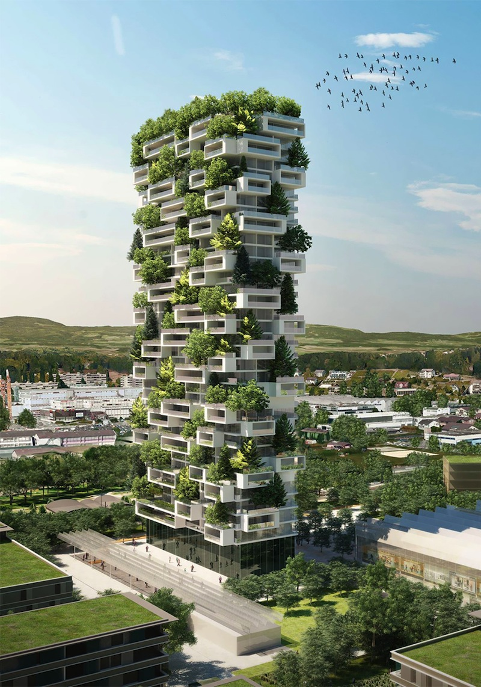
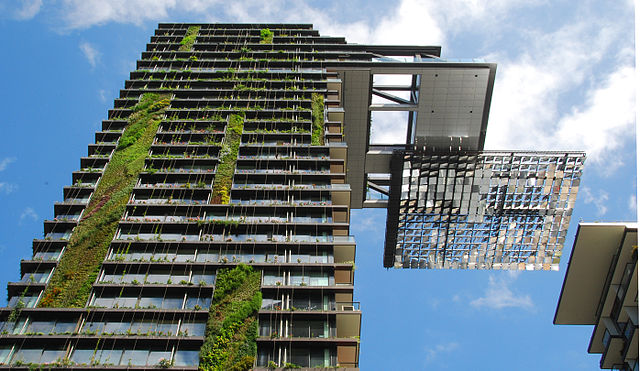

Sustainable architecture is architecture that seeks to minimize the negative environmental impact of buildings by efficiency and moderation in the use of materials, energy, and development space and the ecosystem at large. Sustainable architecture uses
a conscious approach to energy and ecological conservation in the design of the built environment.[1] The idea of sustainability, or ecological design, is to ensure that our actions and decisions today do not inhibit the opportunities of future
generations Housing Progress and the Housing Bust • Outdoor living expanded in popularity. • Changing work patterns encouraged growth of home offices. • Residential projects were integrated into mixed-use facilities. • Technology was incorporated
into kitchens and baths. The Emerging Influences on Home Design • Continued expansion of universal design and accessibility features throughout the home. • Increased focus on a healthy home environment. • Infill development promotes smaller, better
designed homes. • Kitchens remain a focus of household activities. Beyond Your Front Door Technology enhancements increase efficiency. Heightened focus on conservation. New design and construction methods change the building process. Innovation
in materials allows for expanded design options.